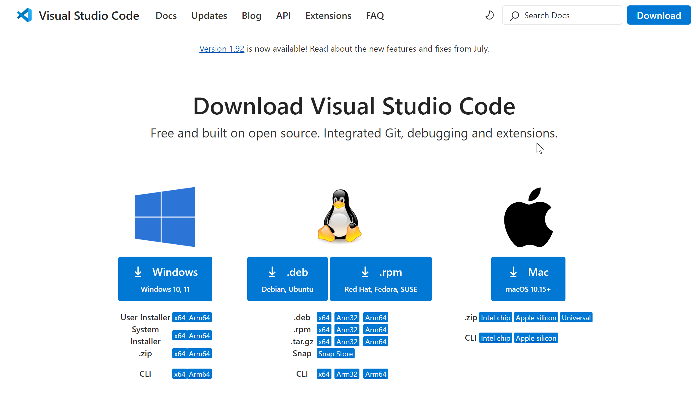
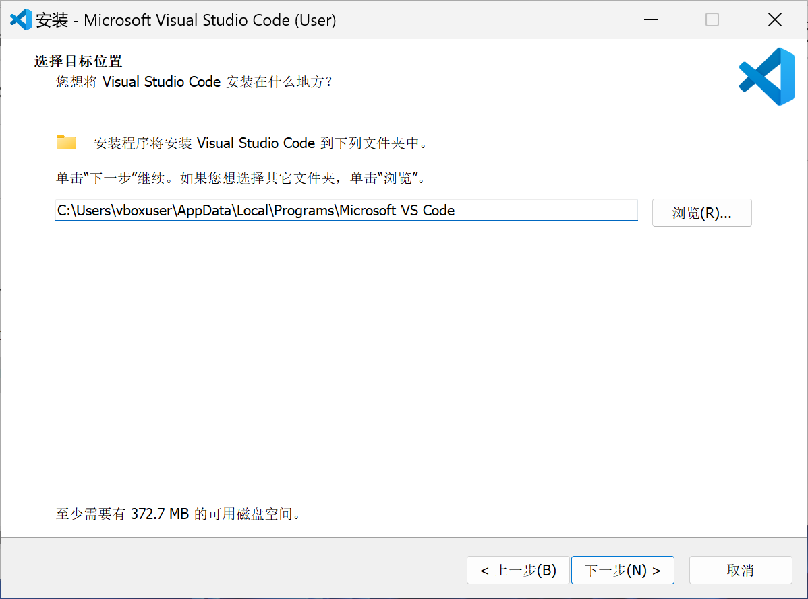
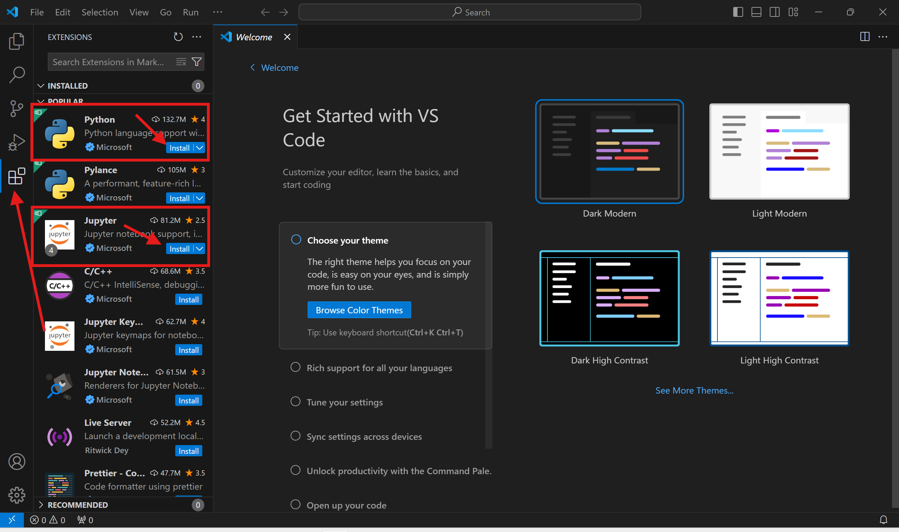

<p style="font-size: 16px; color: #999; margin:5px; position: absolute;"><a href="..">Homepage</a> | <a href="?print-pdf">Printable Version</a></p> <div style="display: flex; justify-content: center; align-items: center; height: 700px;"> <div style="text-align: center; padding: 40px; background-color: white; border: 2px solid rgb(0, 63, 163); border-radius: 20px; box-shadow: 0 0 20px rgba(0,0,0,0.1);"> <h1 style="font-size: 48px; font-weight: bold; margin-bottom: 20px; color: #333;">SI100+ 2026 Lecture 0</h1> <p style="font-size: 24px; color: #666;">环境介绍与配置</p> <p style="font-size: 16px; color: #999; margin-top: 20px; margin-bottom:5px">SI100+ 2026 Staff | 2026-08-08</p> </div> </div> <!--s--> <div class="middle center"><div style="width: 100%"> # Part.0 配置开始前的说明 </div></div> <!--v--> ## 出发之前可能遇到的问题 - 检查你的用户名是否为英文，中文用户名可能导致安装软件时出现问题 - 打开 PowerShell，输入 `whoami`, 输出中不应该包含中文字符 - 我们将展示 Windows 11 操作系统下的步骤，如果你使用其他操作系统，可以询问使用对应操作系统的助教 - 如果你遇到任何问题，请在 Piazza 或 Office Hour 求助，助教们都乐意帮助你 🥰 <!--v--> ## 我们将要配置什么？ 在本教程中，我们将配置一套可以用于 SI100B 课程的环境： uv + Jupyter Notebook + VS Code - uv: 快速的 Python 版本和环境管理器 - Jupyter Notebook：一个交互式笔记本，可以融合代码、文本、图像等多种元素 - VS Code：~~最好的~~代码**编辑器**，拥有丰富的插件生态，支持多种编程语言 <!--s--> <div class="middle center"><div style="width: 100%"> # Part.1 安装 </div></div> <!--v--> ## 安装 VS Code - 官网下载安装包： - 打开 VS Code 官网：[`https://code.visualstudio.com`](https://code.visualstudio.com) - 下载对应系统的安装包（Windows 是 `.exe`，MacOS 是 `.zip`，Linux 可用 `.deb` / `.rpm` 等） - 或者用自带的包管理器（注意网络环境） - macOS 可用 `brew` 或者自带应用商店 - Windows 可以用 `winget` <!--v--> ## 安装 VS Code - 打开浏览器，访问 [VS Code 官网下载页面](https://code.visualstudio.com/Download)，选择对应你的操作系统的版本下载 <p></p> <!--v--> ## 安装 VS Code - 下载完成后，运行安装程序 - 点击同意协议 <img src="images/vscode_install_1.png" width="50%" style="display: block; margin: 0 auto;"> <!--v--> ## 安装 VS Code - 选择安装位置 - 如果不确定要安装到哪个位置，就用默认的位置 <p></p> <!--v--> ## 安装 VS Code - 在选择附加任务的界面，将下图红框中的选项勾选上 <img src="images/vscode_install_3.png" width="50%" style="display: block; margin: 0 auto;"> - 继续一路点击，完成安装 <!--v--> ## 安装 VS Code 插件 - 打开 VS Code，点击左侧边栏的 Extensions 图标 - 我们需要安装 Python 和 Jupyter 这两个插件 - 如果侧边栏没有自动推荐这两个插件，可以在搜索框中搜索并安装 <p></p> <!--v--> ## 安装 uv **Plan A: 官方脚本（不推荐）**： - macOS / Linux： ```bash curl -LsSf https://astral.sh/uv/install.sh | sh ``` - Windows (PowerShell)： ```powershell powershell -ExecutionPolicy Bypass -c "irm https://astral.sh/uv/install.ps1 | iex" ``` - 装完用 `uv --version` 验证。 <!--v--> ## 好像不对…… **常见问题**：官方安装脚本本质是从 GitHub 下载编译好的二进制文件，教育网/校园网环境下 GitHub 经常连不上或卡住不动，导致安装长时间无响应或直接报错超时。 **Plan B：GitHub 加速镜像** - Windows: ```powershell $env:UV_DOWNLOAD_URL = "https://ghfast.top/https://github.com/astral-sh/uv/releases/download/0.12.2" powershell -ExecutionPolicy Bypass -c "irm https://astral.sh/uv/install.ps1 | iex" ``` - MacOS: ```bash export UV_DOWNLOAD_URL="https://ghfast.top/https://github.com/astral-sh/uv/releases/download/0.12.2" curl -LsSf https://astral.sh/uv/install.sh | sh ``` <!--v--> **Plan C**（如果电脑上已经有任意版本的 Python，不推荐）： ```bash # 不推荐 pip install uv -i https://pypi.tuna.tsinghua.edu.cn/simple ``` **Plan D** - Windows: `winget install --id astral-sh.uv -e` - MacOS: `brew install uv` - Linux: 自带包管理器(Eg. `apt`, `pacman`, ...) **Finally** - 终端输入 `uv --version` 回车：`0.2.11` <!--v--> ## 换源 - uv 默认会去官方 PyPI（国外服务器）下载库，国内网络下经常很慢 - 镜像源（Mirror）是国内对各种库和包的“备份”，可以起到加速作用 - 参考：[校园网联合镜像站使用帮助 - PyPI](https://help.mirrors.cernet.edu.cn/pypi/) - 配置方法： - Linux/Unix：在 `~/.config/uv/uv.toml` 或者 `/etc/uv/uv.toml` - Windows：在 `%AppData%\uv\uv.toml` 或者 `%ProgramData%\uv\uv.toml` 填写下面的内容： ```toml [[index]] url = "https://mirrors.cernet.edu.cn/pypi/web/simple" default = true ``` <!--s--> <div class="middle center"><div style="width: 100%"> # Part.2 这些都是什么？ </div></div> <!--v--> ## 什么是环境？ - 桌面快捷方式双击后打开的其实是硬盘里另一个位置的文件；如果原文件被删/挪走，双击会报错"找不到目标"。 - 快捷方式本身不是程序，只是一张写着"真正的东西在那边"的小纸条。 - 双击 = 系统帮你查这张纸条 → 找到路径 → 打开真正的文件。这个过程是系统在背后悄悄做的一次"指路"。  <!--v--> ## 什么是 PATH - 环境变量：像是操作系统的“全局公告板”或“便签纸”。电脑里的所有程序在运行时，都可以随时抬头去上面查看公共信息（比如你是谁、临时文件放哪、常用软件在哪找），而不用在代码里把这些信息死死写死。 - **环境变量**：系统/程序运行时读取的全局设置项，不同终端窗口、不同用户之间可能不一样。 - `PATH` 是一种特殊的**环境变量** - 想象不是一张纸条指一个文件，而是桌上放着一份很长的名单，写着十几个文件夹地址，按顺序排好。当你在终端敲一个词，比如 `python`，系统不知道它是哪个文件、放在哪——于是拿出这份名单，按顺序一个文件夹一个文件夹地找，谁先命中就用谁，后面不再找。" - 这份名单，就是 **PATH**。 <!--v--> ## 真假 Python - 操作系统怎么知道 `python` 这个命令对应哪个程序？ - 按顺序在 `PATH` 里查找 - 演示： - 打开系统的终端 - `echo $PATH`（macOS/Linux）或 `echo $env:PATH`（Windows PowerShell） - 我们也可以通过 `where`（Windows） 或者 `which`（macOS/Linux）来显示系统到底找到的哪一个 `python` - 演示： - `which python` / `where.exe python` <!--v--> ## ⚠️：不要安装多个 Python <div style="margin-top: 10px; margin-right: 10px;" markdown="1"> <img src="images/python_environment.png" width="55%" style="float: right;"> <br/> - 不同的项目可能需要不同的 Python 版本 - 不同的 Python 版本又可能需要不同版本的库 - 有没有工具可以让我们在不同的 Python 环境之间自由切换？ - 💡这就是我们今天要解决的！ </div> <!--v--> ## uv 和 虚拟环境 - 项目 A 是照着旧版本的某个库写的，项目 B 用的是新版本，新版本改了用法…… - 如果整台电脑只让你装一份这个库，装了新的，旧项目可能报错跑不动；装了旧的，新项目又用不上新功能…… - **虚拟环境**（virtual environment）——给每个项目一个独立的、互不干扰的 Python 副本 + 库安装目录。 - 历史脉络：`venv`、`pip`、`virtualenv`、`pipenv`、`poetry`、`conda`……现在越来越多人转向 **uv**，因为它整合了这些功能且速度快很多 - uv: 速度极快的 **Python 包与项目管理工具**，目标是一个工具替代 `pip`、`venv`、`pipx`、`pyenv`、`poetry` 的大部分功能 - 装包速度比 `pip` 快 10-100 倍 - 虚拟环境应该以什么为单位？ <!--s--> <div class="middle center"><div style="width: 100%"> # Part.3 文件夹思维 </div></div> <!--v--> ## 何为：文件夹思维？ - **旧思维**： - Python 是装在电脑里的东西，写一个 `.py` 放桌面，双击打开或运行 `python xxx.py` 就能跑 - 需要什么包就全局安装 `pip install` - 整台电脑只有 **"一个"** Python，文件东丢西放，互不隔离 - **新思维**（这堂课要建立的习惯）： - **一份工作 = 一个文件夹（项目）** - 文件夹里装着代码本身、一份"需要什么"的清单（`pyproject.toml`）、以及专属这个文件夹的 Python 环境（`.venv`） - 永远不单独运行 Python，只在**某个项目里**跑 Python - **项目以文件夹为单位** <!--v--> ## 体验 VS Code 中的文件夹思维 - 前情提要：VS Code 是一个"编辑器"（写代码、看代码、点按钮操作的界面），它本身**不会**执行 Python 代码——真正执行代码的是电脑上装的 Python 解释器。 - VS Code 里有两种打开方式，**我们几乎总是要用后者**： - "Open File"（打开单个文件） - "Open Folder"（打开一个文件夹，也叫"工作区" / Workspace）。 - 演示： - 新建并打开课程文件夹 - 打开终端 <!--v--> ## 用 uv 管理你的环境 1. **管理 Python 版本本身**：uv 能帮你装/切换不同 Python 版本 - `uv python install 3.12` 装 3.12 版本的 Python - `uv python list` 列出可用的 Python 2. **创建新项目**：`uv init myproject`，自动生成一些初始文件： - `pyproject.toml`：项目配置和依赖声明，`.python-version`：版本声明 3. `uv venv`（可选）：创建一个崭新的虚拟环境 4. **`uv sync`** ：安装项目所需的依赖 - `uv.lock`：记录精确版本号，保证"别人电脑装出来的环境和你一模一样" - 别人克隆你的项目后，**只用一条命令就能按 lock 文件/声明文件精确复现环境** 5. **用 VS Code 打开这个项目/文件夹**： - `code .`（终端唤起 VS Code 并打开当前文件夹），或者手动 Open Folder 6. **加依赖**：`uv add pyjokes`，观察 `pyproject.toml` 和 `uv.lock` 的变化。 7. **运行代码**：`uv run python main.py` 或 `uv run main.py` <!--v--> ## uv 是如何让环境生效的？ - 虚拟环境在哪里？——`.venv` 文件夹 - 如何实现的切换环境？ - 演示： - 终端打开文件夹，查看 `PATH`、寻找 `python` 位置 - 手动激活环境：`source .venv/bin/activate`(macOS/Linux) / `.\.venv\bin\activate.ps1` - 再次查看 `PATH`、寻找 `python` 位置 - 可见，他通过修改了环境变量来实现运行不同的 Python <!-- .element: class="fragment" --> - （实际上还有一些变化，这里不再赘述，感兴趣的同学可以自行探索，期待你在 Piazza 上面发贴展示你的探索结果！）<!-- .element: class="fragment" --> <!--s--> <div class="middle center"><div style="width: 100%"> # Part.4 在 VS Code 中使用 Jupyter Notebook </div></div> <!--v--> ## VS Code 打开文件夹 - 在桌面或者其他地方新建一个文件夹，命名为 `SI100+` - 将 Piazza 上的本课的压缩包**完全解压**并移动到 `SI100+` 文件夹中 - 打开 VS Code，在 VS Code 中点击顶部菜单栏的 File `->` Open Folder，打开刚刚新建的 `SI100+` 文件夹 - 打开 VS Code 自带的终端，输入 `uv sync` 并回车，根据文件夹自带的项目文件同步依赖和创建环境 - 点击左侧边栏的 `.ipynb` 文件，即可打开文件 - 选择 Kernel 里，找到我们的环境 - 运行 Notebook！ <div style="position: absolute; bottom: -20vh; text-align: center;"> ### 到这里，我们的环境配置初步完成！🎉 </div> <!--s--> <div style="display: flex; justify-content: center; align-items: center; height: 700px; "> <div style="text-align: center; padding: 40px; background-color: white; border-radius: 20px; box-shadow: 0 0 20px rgba(0,0,0,0.1);"> <div style="display: inline-block; padding: 20px 40px; border-radius: 10 px; margin-bottom: 20px;"> <h1 style="font-size: 48px; font-weight: bold; margin: 0; color: rgb(16, 33, 89)">Thanks for Listening</h1> </div> <p style="font-size: 24px; color: #666; margin: 0;">Any questions?</p> </div> </div>